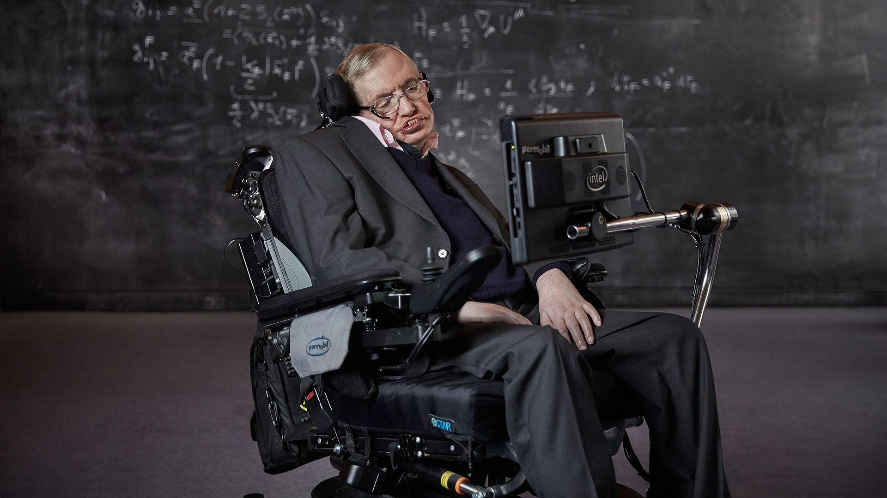

BIOGRAFIA


"Meu objetivo é simples: É um entendimento completo do universo, por que ele é como ele é e por que ele existe afinal."

Stephen William Hawking nasceu me 8 de janeiro de 1942 em Oxford, na Inglaterra. Foi um físico e cosmólogo britânico que tornou-se mundialmente reconhecido pela sua contribuição à ciência, considerado um dos mais renomados cientistas do século. Hawkins faleceu no dia 14 de março de 2018, com 76 anos, em Cambridge.
Uma curiosidade de seu nascimento é que foi exatamente no aniversário de 300 anos da morte de Galileu. Stephen Hawking entrou na faculdade pretendendo estudar matemática, mas seu pai, Frank Hawking, queria que ele se formasse em medicina. Não haviam essas opções de curso na University College, em Oxford, então acabou optando por física, formando-se três anos depois, em 1962. Seus principais interesses eram termodinâmica, mecânica quântica e relatividade.
Em 1966, obteve o doutorado na Trinity Hall, em Cambridge. Passou a ser pesquisador antes de se tornar professor no Goinville and Caius College, faculdade dentro da Universidade de Cambridge. Além disso, fez parte do Instituto de Astronomia até 1973 e do Departamento de Matemática Aplicada e Física Teórica até 2009.
Stephen Hawking era portador de ELA, esclerose lateral amiotrófica, uma doença sem cura e neurodegenerativa que paralisa os músculos do corpo, não afetando as funções cognitivas. O cientista detectou a doença quando tinha apenas 21 anos. Em 1985, passou por uma traqueostomia após ter contraído pneumonia na Suíça, e desde então precisou utilizar um sintetizador de voz para se comunicar. Foi perdendo o movimento das pernas e dos braços aos poucos, assim como o restante da musculatura.
Stephen Hawking faleceu no dia em que Albert Einstein completaria 139 anos, devido a complicações da sua doença degenerativa. A família conta que ele morreu em paz. Hawking faleceu no dia 14 de março de 2018, com 76 anos, em Cambridge.